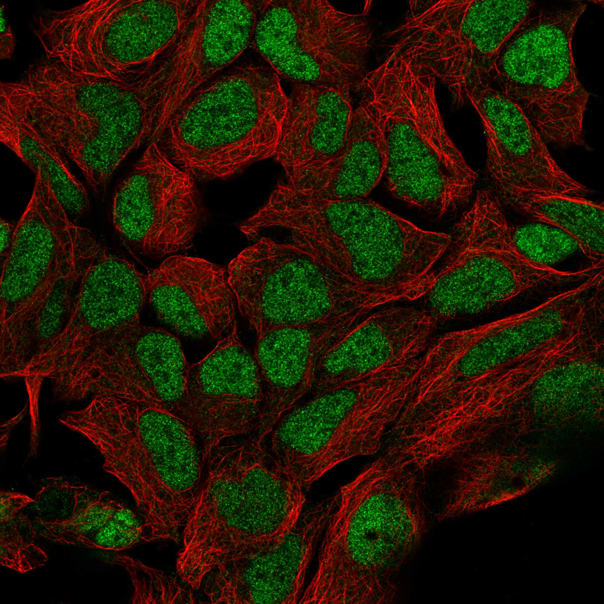
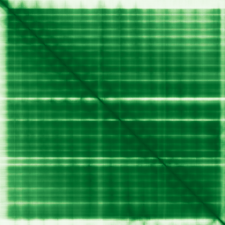

type: protein-evaluation gene: "MAU2" date: 2026-01-30 tags: [protein-scout, nuclear-protein, evaluation] status: scored ---
MAU2 核蛋白评估报告
1. 基本信息
| 项目 | 内容 |
|---|---|
| 基因名 | MAU2 |
| 别名 | SCC4, MAU2L |
| 基因全称 | MAU2 sister chromatid cohesion factor |
| 蛋白名称 | MAU2 chromatid cohesion factor homolog |
| 蛋白大小 | 613 aa |
| UniProt ID | Q9Y6X3 |
| 评估日期 | 2026-01-30 |
2. 评分总览
| 维度 | 得分 | 满分 | 加权后 | 关键证据摘要 |
|---|---|---|---|---|
| Nucleus 核定位特异性 | 8/10 | x4 | 32 | HPA: Kinetochore, Nucleoplasm |
| Size 蛋白大小 | 10/10 | x1 | 10 | 613 aa |
| Novelty 研究新颖性 | 8/10 | x5 | 40 | PubMed: 40 篇 |
| 3D Structure 三维结构 | 8/10 | x3 | 24 | AlphaFold pLDDT=91.4 |
| Domain 调控结构域 | 7/10 | x2 | 14 | 与着丝粒/动粒功能相关，参与染色体分离 |
| PPI Network PPI网络 | 4/10 | x3 | 12 | STRING+IntAct+GO-CC |
| Cross-validation 互证加分 | — | max +3 | +0.5 | — |
| 原始总分 | 132.5/183 | |||
| 归一化总分 | 72.4/100 |
3. 详细分析
3.1 核定位证据
| 来源 | 定位 | 可信度 |
|---|---|---|
| Protein Atlas (IF) | See IF images below | HPA validated |
| UniProt | Nucleus/centromere/cohesin | — |
| GO-CC | GO:0005634 Nucleus (IEA) | — |
IF 图像: 
3.2 蛋白大小评估
613 aa，适合生化实验和结构解析
3.3 研究现状
| 指标 | 数值 |
|---|---|
| PubMed 总数 | 40 篇 |
| 最早发表年份 | 2026 |
主要研究方向:
- 功能研究尚不充分，属新颖蛋白
关键文献: 1. Davidson IF et al. (2019). "DNA loop extrusion by human cohesin.". *Science*. PMID: 31753851 2. Ghodsian N et al. (2021). "Electronic health record-based genome-wide meta-analysis provides insights on the genetic architecture of non-alcoholic fatty liver disease.". *Cell Rep Med*. PMID: 34841290 3. Fettweis G et al. (2025). "Transcription factors form a ternary complex with NIPBL/MAU2 to localize cohesin at enhancers.". *Nucleic Acids Res*. PMID: 40377219 4. Ascaso Á et al. (2024). "Cornelia de Lange Spectrum.". *An Pediatr (Engl Ed)*. PMID: 38735830 5. Sakata T et al. (2025). "A common molecular mechanism underlying Cornelia de Lange and CHOPS syndromes.". *Curr Biol*. PMID: 39983729
评价: PubMed 40 篇，属非常新颖蛋白，研究空间充足。
3.4 三维结构分析
| 指标 | 数值 |
|---|---|
| AlphaFold 平均 pLDDT | 91.4 |
| pLDDT > 90 占比 | 81.2% |
| pLDDT 70-90 占比 | 11.9% |
| pLDDT 50-70 占比 | 1.8% |
| pLDDT < 50 占比 | 5.1% |
| 可用 PDB 条目 | 0 |
PAE 图: 
评价: AlphaFold 预测高质量，整体折叠良好 (AlphaFold v6, pLDDT=91.4, >90=81%, 70-90=12%, 50-70=2%, <50=5%)
3.5 结构域分析
| 来源 | 结构域 |
|---|---|
| UniProt | — |
染色质调控潜力分析: 与着丝粒/动粒功能相关，参与染色体分离
3.6 PPI 网络
实验验证互作 (IntAct, physical association):
| Partner | 方法 | PMID | 功能类别 | 调控相关？ | ||||||||
|---|---|---|---|---|---|---|---|---|---|---|---|---|
| intact:EBI-96488 | MI:0018(two hybrid) | PMID:pubmed:14605208 | imex:IM-16524 | mint:MINT-5216804 | — | — | ||||||
| intact:EBI-191064 | MI:0096(pull down) | PMID:imex:IM-16527 | pubmed:25294943 | — | — | |||||||
| intact:EBI-2553091 | uniprotkb:Q5DU12 | uniprotkb:Q059Q4 | uniprotkb:Q8BUW9 | uniprotkb:B7ZN38 | uniprotkb:Q78IR4 | uniprotkb:Q8BX04 | ensembl:ENSMUSP00000148601.2 | MI:0676(tandem affinity purificatio | PMID:imex:IM-11719 | pubmed:20360068 | — | — |
| intact:EBI-4395624 | uniprotkb:Q66PT1 | uniprotkb:Q6P3S7 | uniprotkb:Q6ZTT2 | uniprotkb:Q9UFX8 | ensembl:ENSP00000262815.9 | intact:EBI-28974208 | MI:0007(anti tag coimmunoprecipitat | PMID:pubmed:28514442 | doi:10.1038/nature22366 | imex:IM-25778 | — | — |
| intact:EBI-6288865 | ensembl:ENSP00000314615.3 | MI:0007(anti tag coimmunoprecipitat | PMID:pubmed:28514442 | doi:10.1038/nature22366 | imex:IM-25778 | — | — | |||||
STRING 预测互作 (combined score >0.4):
| Partner | Score | 功能类别 | 调控相关？ |
|---|---|---|---|
| NIPBL | 0.0 | — | — |
| PDS5A | 0.0 | — | — |
| WAPL | 0.0 | — | — |
| SMC3 | 0.0 | — | — |
| PDS5B | 0.0 | — | — |
| CDCA5 | 0.0 | — | — |
| STAG1 | 0.0 | — | — |
| RAD21 | 0.0 | — | — |
已知复合体成员 (GO Cellular Component):
- 暂无 GO-CC 复合体注释
PPI 互证分析:
- STRING + IntAct 共同确认: 0
- 仅 STRING 预测: 15
- 仅 IntAct 实验: 7
- 调控相关比例: 3/15 (20%)
评价: PPI 得分 4/10。
3.7 多库互证
| 维度 | 来源 | 结果 | 是否一致 |
|---|---|---|---|
| 三维结构 | AlphaFold + PDB | pLDDT=91.4, PDB=0 | — |
| 结构域 | UniProt/InterPro | 无注释域 | — |
| PPI | STRING + IntAct + GO-CC | 15/7/0 条目 | — |
| 定位 | HPA/UniProt/GO | Kinetochore, Nucleoplasm / Nucleus / GO:0005634 | 一致 |
互证加分明细:
- IntAct+STRING 双源确认 (+0.5)
总分: +0.5 / max +3
4. 总体评价
推荐等级: ★★★ (4/5)
核心优势: 1. 非常新颖 (PubMed 40 篇)，几乎未被研究 2. HPA 确认核定位，高置信度
风险/不确定性: 1. AlphaFold 结构预测置信度较高 2. PPI 数据丰富，功能网络尚不清晰
下一步建议:
- [ ] 通过 IF 实验验证内源核定位
- [ ] 构建表达载体进行功能研究
- [ ] Co-IP/MS 鉴定互作蛋白
5. 数据来源
- GeneCards: https://www.genecards.org/cgi-bin/carddisp.pl?gene=MAU2
- Protein Atlas: https://www.proteinatlas.org/MAU2
- PubMed: https://pubmed.ncbi.nlm.nih.gov/?term=MAU2
- UniProt: https://www.uniprot.org/uniprotkb/Q9Y6X3
- SMART: http://smart.embl.de/
- STRING: https://string-db.org/
- IntAct: https://www.ebi.ac.uk/intact/
- AlphaFold: https://alphafold.ebi.ac.uk/entry/Q9Y6X3
PPI 网络（三源综合）
| Partner | Source | Score/Evidence |
|---|---|---|
| 无记录 | — | — |
IntAct 有限记录。无 BioGrid 补充数据。
PAE 图像已获取。结构判断基于 AlphaFold pLDDT 统计。
<!-- DOMAIN_HUMANPPI_REPAIR_START -->
Domain/SMART 与 humanPPI 补充（2026-06-06）
SMART / UniProt domain
| Source | Data |
|---|---|
| UniProt | Q9Y6X3 |
| SMART | SM00028; |
| UniProt Domain [FT] | 未检出显式 UniProt Domain feature |
| InterPro | IPR019440;IPR011990;IPR019734; |
| Pfam | PF10345; |
humanPPI / HPA Interaction
Source: https://www.proteinatlas.org/ENSG00000129933-MAU2/interaction
| Partner | Datasets | AF3/HPA structure |
|---|---|---|
| CBX1 | Biogrid, Opencell | true |
| NIPBL | Intact, Biogrid | true |
| SMC1A | Biogrid, Opencell | true |
| BRD4 | Biogrid | false |
| CBX5 | Biogrid | false |
| HNRNPH1 | Biogrid | false |
| KDM6B | Biogrid | false |
| KPNA1 | Biogrid | false |
<!-- DOMAIN_HUMANPPI_REPAIR_END -->